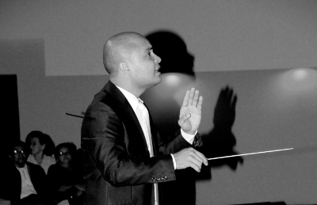

Oscar Barahona
A la edad de 6 años comienza su carrera musical ingresando a la Escuela de Aplicación Musical, y posteriormente a la la Escuela de Musica Victoriano López de donde se gradúa en el 2001 como Maestro de violín. Posterior a su graduación Fué Concertino de la Orquesta de Cámara de San Pedro Sula
Pianista con especialidad en acompañamiento, Óscar ha tenido la oportunidad de acompañar a artistas de primer nivel mundial como ser Claus Stoll, Julio López, Victoria Manzo por mecionar algunos, manejanto todo el repertorio de acompañamiento para cuerda frotada.
Miembro fundador del quinteto Mozart, agrupación con la cual brinda giras nacionales e internacionales siendo para este tiempo la mejor agrupación de cámara del país. Miembro de OSJUNCA (Orquesta sinfónica Juvenil Centro Americana).
Entre sus Maestro figuran importantes personalidades de la música a nivel nacional e internacional, Sergio Suazo Lang, José Iglesias Carnot (Cuba) Rubén Moncada (Chile) Amalia Marín (Cuba), Olga Valiente (cuba) .
Para el 2008 tiene la iniciativa de tomar la batuta en agrupaciones de cámara y sinfónica, especialmente en el género operístico, desarrollando una serie de conciertos que dan a conocer el bel canto en San Pedro Sula. Para el 2010 se convierte en el director titular de los coros de la fundación musical de Honduras y posteriormente director asistente de la ópera para San Pedro Sula.
Oscar ha brindado una cantidad enorme de conciertos, en los géneros solísticos, de acompañamiento, sinfónicos, corales y operísticos abarcando de esta manera casi todas las ramas de la música seria, además de manejar la dirección de coros profesionales y semis profesionales, como ensambles instrumentales y vocales, orquestas de cámara y orquesta sinfónicas, además de ser uno de los pocos artistas a nivel internacional que maneja dos instrumentos a un mismo nivel.
Estudia en la Universidad de Pensacola (EUA), un diplomado orientado al desarrollo de programas corales, orquestales y de la enseñanza de la historia musical.
Fundador de la prestigiosa ACADEMIA DE MÚSICA DE CAMARA, a la cual pertenecen; El Coro di Venti, Il Coro di Bambini, el Sexteto Latinoamericano y la Orquesta de Cámara Mozartiana, de la cual es el director titular.
Ha dirigido la Orquesta Filarmónica Nacional, La Orquesta de Cámara de San Pedro Sula, La Orquesta de la Academia de Cámara y la Orquesta Sinfónica de Guatemala.
Para la segunda mitad del 2015 Óscar recibe el prestigioso premio TOYP, brindado por la Cámara Junior Internacional, como uno de los diez jóvenes más influyentes de Honduras.
El Maestro Barahona a sus 31 años cuenta ya con una importante agenda en la rama de la dirección orquestal, como el fundador del Festival Internacional de Musica de San Pedro Sula (INMUFESTSPS), siendo este probablemente el evento artístico más importante de nuestro país , situando a San Pedro Sula como la capital cultural de Centroamérica para el 2016.